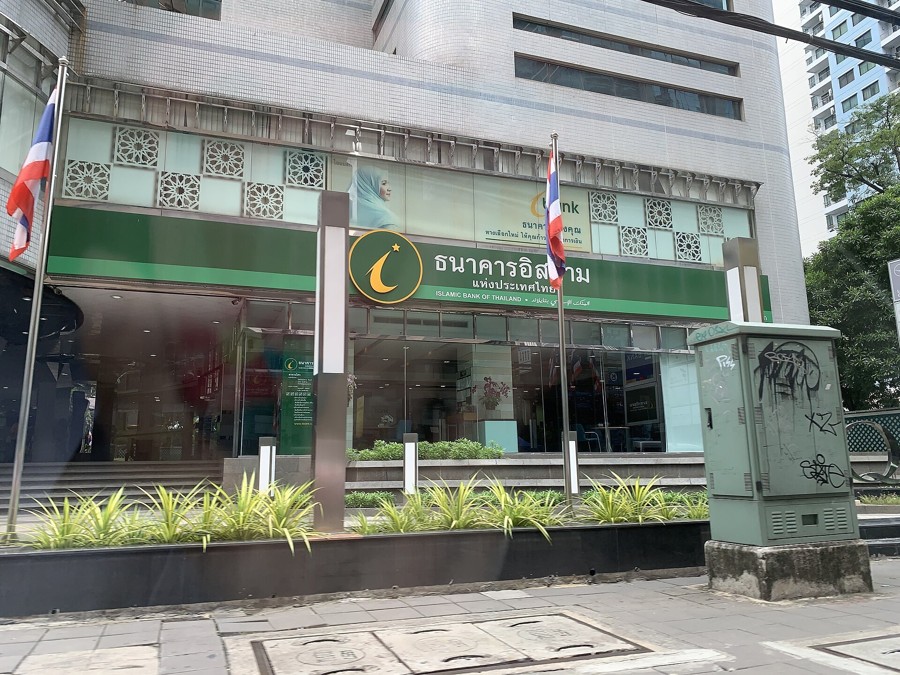

Как работает такафул (исламское страхование): модели табарру, вакала и мудараба
Такафул — соответствующая шариату система страхования, в которой участники вносят взносы в общий фонд с намерением взаимопомощи (табарру). Он считается свободным от элементов рибы (процента), гарара (чрезмерной неопределённости) и майсира (азартной игры), которые учёные усматривают в обычном коммерческом страховании. Этот справочник на основе источников объясняет, что такое такафул, по каким моделям он работает и какова его история.

Страхование — система, обеспечивающая финансовую защиту при наступлении непредвиденного ущерба (болезнь, несчастный случай, повреждение имущества). Многие исламские учёные считают обычное коммерческое страхование проблемным, поскольку в нём присутствуют элементы рибы (процента), гарара (чрезмерной неопределённости) и майсира (азартной торговли риском). Такафул — альтернативная система, созданная для устранения этих возражений и основанная на принципе взаимопомощи (та'авун).
Что такое такафул
Слово «такафул» происходит от арабского корня «кафала» (гарантировать, заботиться друг о друге). В такафуле участники вносят взносы в общий фонд; этот взнос является не покупкой, а табарру — пожертвованием, сделанным с намерением взаимопомощи. Если один из участников несёт покрытый убыток, ему выплачивается возмещение из общего фонда. Таким образом, риск не «продаётся» страховщику, а разделяется между участниками.
Отличие от обычного страхования
Ключевое отличие — в структуре движения денег. В обычном страховании компания принимает риск на себя и удерживает андеррайтинговую прибыль. В такафуле фонд остаётся собственностью участников: любой остаток (сюрплюс), оставшийся после выплат и расходов на конец года, в зависимости от модели либо возвращается участникам, либо распределяется в их пользу. Кроме того, фонд такафула инвестируется только в соответствующие шариату активы (без процента, без запрещённых отраслей).

Оператор и основные модели
Организация, управляющая фондом, — оператор такафула. Он работает на основе одной из следующих моделей: модель вакала (агентская) — оператор выступает агентом от имени участников за заранее согласованное вознаграждение за управление и не претендует на андеррайтинговый остаток; модель мудараба — оператор инвестирует средства фонда и получает согласованную долю инвестиционной прибыли; гибридная модель — сочетает вакала (вознаграждение за управление) и мудараба (долю инвестиционной прибыли). Некоторые системы используют также модель вакф (вакуф, эндаумент).
История в мире
Первой современной такафул-компанией стала Исламская страховая компания Судана, основанная в 1979 году Исламским банком Фейсала. В том же году в Дубае (ОАЭ) был основан первый такафул-оператор, позже известный как SALAMA. В Малайзии в 1984 году был принят Закон о такафуле, и в ноябре того же года учреждён первый оператор страны — Syarikat Takaful Malaysia Berhad. Отраслевые стандарты устанавливают такие организации, как AAOIFI (Организация бухгалтерского учёта и аудита исламских финансовых учреждений) и IFSB (Совет исламских финансовых услуг).
Её масштаб сегодня
По оценкам, валовые взносы мировой индустрии такафула на 2024 год составляли около 35 миллиардов долларов США; крупнейшие рынки — Саудовская Аравия, Малайзия и ОАЭ. Операции такафула существуют более чем в 40 странах.
Положение в Узбекистане
Первым оператором на узбекском рынке, работавшим по шариатским принципам взаимопомощи, стал «Узаро Ёрдам», начавший деятельность в 2017 году; второй оператор, APEX Takaful, начал работу в 2021 году. 6 декабря 2024 года в Ташкенте Программа развития ООН (ПРООН) и Национальное агентство перспективных проектов представили базовый аналитический отчёт по системе такафула. Правовая база исламских финансов, включая такафул, формируется поэтапно.
Итог
Такафул — модель страхования, основанная не на покупке риска, а на взаимопомощи участников. Он стремится быть свободным от рибы, гарара и майсира и оставляет любой остаток в фонде в пользу участников. При выборе продукта такафула важно проверить, по какой модели он работает, как распределяются взносы и есть ли шариатский наблюдательный совет.